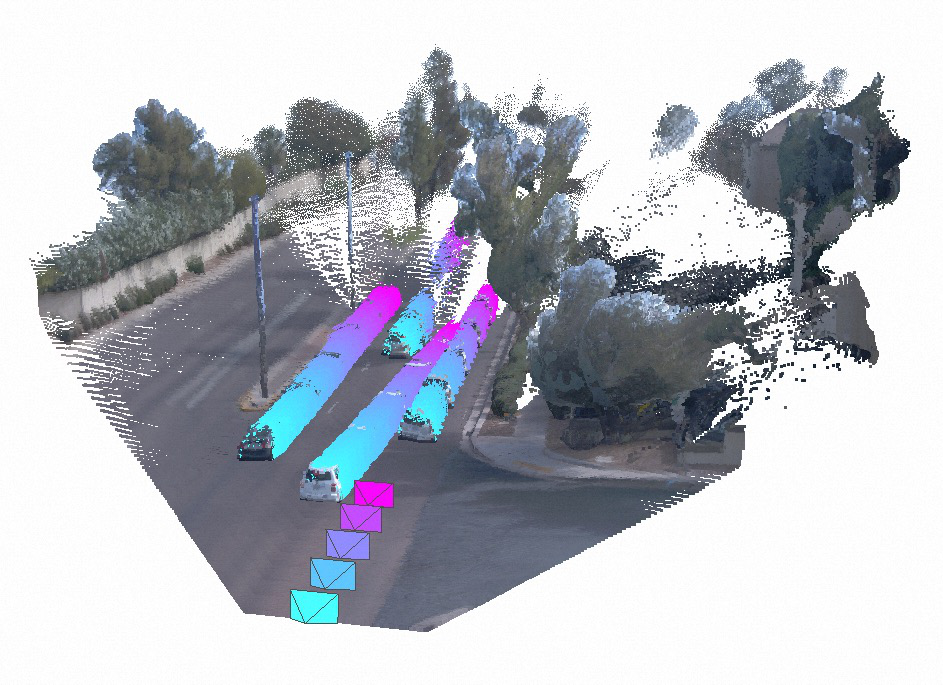
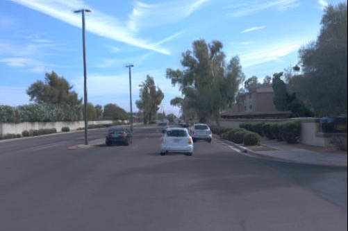
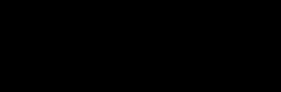

StreetForward: Perceiving Dynamic Street with Feedforward Causal Attention Zhongrui Yu Li Auto Inc. Zhao Wang Li Auto Inc. Yijia Xie∗ Zhejiang University Yida Wang† Li Auto Inc. Xueyang Zhang Li Auto Inc. Yifei Zhan Li Auto Inc. Kun Zhan Li Auto Inc. Spatial Extrapolation Input Temporal Interpolation Depth Normal Motion Dyn. Map Figure 1: StreetForward: High-fidelity spatio-temporal extrapolated view synthesis via feedforward 3DGS dynamic street reconstruction. The right pane illustrates our 3DGS representation of a dynamic street with precise velocities, enabling motion- aware rendering at novel poses and times independent of segmentation or tracking. Abstract Feedforward reconstruction is crucial for autonomous driving appli- cations, where rapid scene reconstruction enables efficient utiliza- tion of large-scale driving datasets in closed-loop simulation and other downstream tasks, eliminating the need for time-consuming per-scene optimization. We present StreetForward, a pose-free and tracker-free feedforward framework for dynamic street re- construction. Building upon the alternating attention mechanism from Visual Geometry Grounded Transformer (VGGT), we pro- pose a simple



以下条目通过相近关键词在 arXiv 进行检索，用于补充技术脉络（不是简单翻译）。
这篇论文在方法部分强调了 feedforward 推理路径与场景建模效率。结合相关工作，建议重点关注： 1) 训练目标和损失函数如何平衡质量与速度；2) 在 sparse-view / dynamic scene 条件下的鲁棒性； 3) 与可控 world model 的接口，尤其是规划或仿真闭环中的可扩展性。